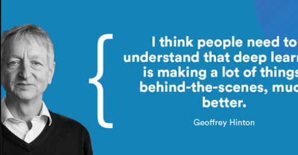
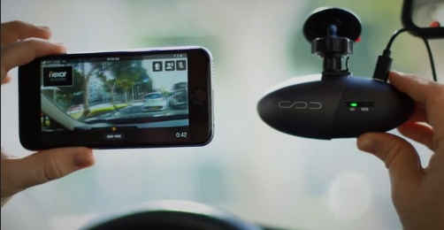
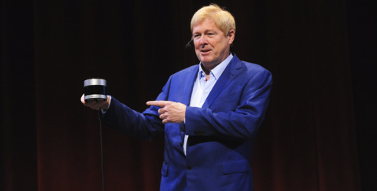

<h1>Aricles written by me on Linkedin</h1>
<hr />
<h3>The links provided will take you to Linkedin, where you can read the articles</h3>
<ol>
  <li><a href="https://www.linkedin.com/pulse/geoffrey-hinton-alan-francis?lipi=urn%3Ali%3Apage%3Ad_flagship3_profile_view_base_featured_details%3BF%2FPWUHZRQdmBZj6DYS%2FgGg%3D%3D">Geoffrey Hinton, the godfather of deep learning</a><br />
    
  </li>
  <li><a href="https://www.linkedin.com/pulse/driving-safe-together-nexar-alan-francis?lipi=urn%3Ali%3Apage%3Ad_flagship3_profile_view_base_featured_details%3BF%2FPWUHZRQdmBZj6DYS%2FgGg%3D%3D">Eran Shir, driving safe together</a><br />
    
  </li>
  <li><a href="https://www.linkedin.com/pulse/avt-aces-2019-award-winners-alan-francis?lipi=urn%3Ali%3Apage%3Ad_flagship3_profile_view_base_featured_details%3BF%2FPWUHZRQdmBZj6DYS%2FgGg%3D%3D">AVT ACES: 2019 Award Winners</a><br />
    
  </li>
  <li><a href="https://www.linkedin.com/pulse/david-hall-autos2050-award-winner-alan-francis?lipi=urn%3Ali%3Apage%3Ad_flagship3_profile_view_base_featured_details%3BF%2FPWUHZRQdmBZj6DYS%2FgGg%3D%3D">David Hall, Autos2050 Award Winner</a><br />
    
  </li>
</ol>
<hr />
<button><a href="../index.html">Back to Home</a></button>
